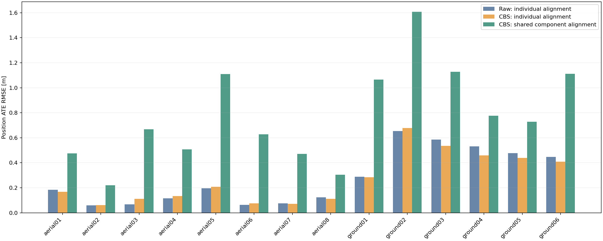
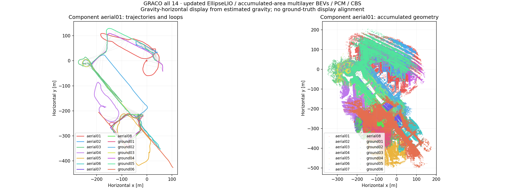

Updated EllipseLIO → accumulated-area multilayer ellipsoid BEVs → MapClosures → distributed PCM → CBS
Shared-component ATE: 0.861 m. CBS improves individually aligned ATE for 8 robots and worsens it for 6. This run establishes connectivity for these sequences; it is not a controlled comparison against the full-height BEV method.
Position ATE RMSE in metres, measured entirely with evo 1.36.5: 50 ms association, rigid alignment, no scale fitting. Individual alignment gives each trajectory its own rigid fit. Shared alignment gives every robot in a connected component the same rigid fit, exposing relative placement errors.
| Robot | Raw ATE [m] | CBS individual [m] | CBS shared [m] | Component | Max update gap [s] | Processing mean / p95 [ms] | Submaps |
|---|---|---|---|---|---|---|---|
| aerial01 | 0.185 | 0.168 | 0.475 | aerial01 | 0.272 | 39.1 / 98.9 | 49 |
| aerial02 | 0.060 | 0.063 | 0.221 | aerial01 | 0.280 | 51.8 / 106.0 | 28 |
| aerial03 | 0.068 | 0.111 | 0.667 | aerial01 | 0.224 | 41.2 / 100.9 | 40 |
| aerial04 | 0.116 | 0.135 | 0.507 | aerial01 | 0.263 | 46.4 / 107.1 | 32 |
| aerial05 | 0.196 | 0.208 | 1.109 | aerial01 | 0.220 | 48.6 / 108.6 | 34 |
| aerial06 | 0.063 | 0.076 | 0.628 | aerial01 | 0.184 | 15.9 / 37.3 | 33 |
| aerial07 | 0.076 | 0.071 | 0.472 | aerial01 | 0.186 | 13.9 / 31.8 | 40 |
| aerial08 | 0.124 | 0.112 | 0.305 | aerial01 | 0.225 | 52.6 / 108.8 | 29 |
| ground01 | 0.288 | 0.285 | 1.065 | aerial01 | 0.320 | 21.4 / 37.5 | 34 |
| ground02 | 0.655 | 0.677 | 1.608 | aerial01 | 0.332 | 21.2 / 37.4 | 39 |
| ground03 | 0.586 | 0.536 | 1.128 | aerial01 | 0.337 | 27.3 / 86.3 | 30 |
| ground04 | 0.532 | 0.460 | 0.777 | aerial01 | 0.216 | 25.3 / 44.7 | 33 |
| ground05 | 0.477 | 0.439 | 0.729 | aerial01 | 0.200 | 21.7 / 40.8 | 52 |
| ground06 | 0.448 | 0.409 | 1.111 | aerial01 | 0.200 | 23.0 / 41.8 | 31 |
Update gaps are sensor-time intervals between successful LiDAR corrections. Processing time is native per-scan work. They measure different quantities.

Turquoise edges connect aerial and ground robots; grey edges connect robots of the same platform. Hover over an edge for the retained-loop count. Connectivity alone does not establish accurate alignment.
| Loop category | Geometrically accepted | PCM retained |
|---|---|---|
| aerial–aerial | 151 | 151 |
| ground–ground | 147 | 147 |
| aerial–ground | 243 | 243 |
658 geometric verification attempts; 117 rejected. PCM excluded 0 proposed loops. Backend wall time: 1588.4 s.
Retained loop translation error: median 0.866 m, p95 2.288 m; rotation error: median 0.940°, p95 2.281°. This is a separate post-run RTK/INS diagnostic and does not change loop acceptance. All loop-transform errors.
CBS used 540 extra native registration factors. 1 retained pose constraint(s) did not receive an extra factor because of the separate CBS geometry gate. Loop counts describe submap pairs, not independent places: overlapping snapshots reuse geometry.
Gravity-horizontal views computed from estimated IMU gravity. Each connected component has its own recovered frame. Ground truth does not align these displayed maps.

Odometry uses the updated persistent map. The loop pipeline snapshots all available native processed map representatives within an 80 m horizontal radius, every 20 m or 10 s. Five terrain-relative bands supply same-band ORB matches; pooled, deduplicated matches receive joint SE(2) RANSAC, geometric height initialization, and unchanged GICP verification. Full-height BEVs are inspection controls. PCM allows a singleton loop; native CBS includes registration factors.
Terrain fitting is independent for each snapshot. A supported low surface can be a roof or another level. Failed terrain support produces empty layers. These are processed map representatives, not full-resolution raw scans. This run is an experiment with the layered adaptation, not a reproduction of ForestLPR.
All 14 live Rerun recordings and the result recording verified. Every one of the 504 gallery images reproduces its saved ORB features; descriptor/evidence memberships, causal availability, anchor timestamps, source hashes, calibration hashes and sensor hashes checked. 47 distinct regression tests passed after fixture corrections; a separate 14-worker transport/PCM/CBS preflight passed. Ground truth entered only after optimization and is used for evaluation. Workstation 148 had no CPU, memory or GPU quotas. Bulk geometry and prior experiments are retained.